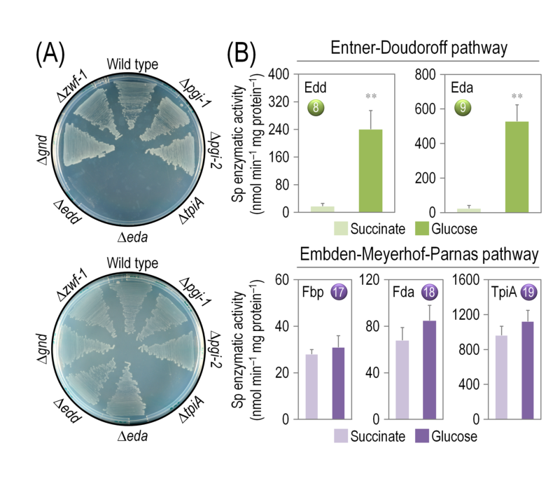

eda encodes the canonical 2-dehydro-3-deoxy-phosphogluconate (KDPG) aldolase of Pseudomonas putida KT2440. The 235 aa enzyme belongs to the KHG/KDPG aldolase family and catalyzes cleavage of KDPG to pyruvate and glyceraldehyde 3-phosphate, which is the carbon-splitting step of the Entner-Doudoroff route from 6-phosphogluconate. UniProt also places the protein in 2-dehydro-3-deoxy-D-gluconate degradation step 2/2 and predicts a homotrimeric enzyme.
| GO Term | Evidence | Action | Reason |
|---|---|---|---|
|
GO:0008675
2-dehydro-3-deoxy-phosphogluconate aldolase activity
|
IEA
GO_REF:0000120 |
ACCEPT |
Summary: This annotation captures the specific catalytic activity named in UniProt and matches the recorded EC 4.1.2.14 reaction that cleaves KDPG into glyceraldehyde 3-phosphate and pyruvate. It is the core molecular function of Eda.
Reason: The term exactly matches the enzyme name and reaction chemistry given in the UniProt record for Q88P29, so it should be retained as the primary functional annotation.
Supporting Evidence:
file:PSEPK/eda/eda-uniprot.txt
RecName: Full=2-dehydro-3-deoxy-phosphogluconate aldolase
file:PSEPK/eda/eda-uniprot.txt
Reaction=2-dehydro-3-deoxy-6-phospho-D-gluconate = D-glyceraldehyde 3-...phosphate + pyruvate
file:PSEPK/eda/eda-deep-research-falcon.md
**Eda (KDPG aldolase)** catalyzes the defining aldolase step of the Entner–Doudoroff (ED) pathway: **cleavage of KDPG to pyruvate and glyceraldehyde-3-phosphate (GAP/G3P)**.
file:PSEPK/eda/eda-deep-research-falcon.md
In *Pseudomonas putida* KT2440, **eda is PP_1024** and encodes **2-keto-3-deoxy-6-phosphogluconate (KDPG) aldolase** (EC **4.1.2.14**), consistent with UniProt **Q88P29** and the KHG/KDPG aldolase family annotation.
|
|
GO:0016829
lyase activity
|
IEA
GO_REF:0000002 |
MARK AS OVER ANNOTATED |
Summary: This broad parent term is technically correct because Eda is a lyase, but it adds little beyond the much more informative child term GO:0008675. It is a generic InterPro2GO (GO_REF:0000002) parent of the specific KDPG aldolase activity that is already annotated, so it represents an over-annotation rather than an informative independent function. The falcon deep research confirms the specific KDPG aldolase activity as the evolved function, leaving the generic lyase term redundant.
Reason: The specific child term GO:0008675 already captures the evolved aldolase (lyase) activity, so the generic parent lyase term is a redundant high-level IEA over-annotation that should not be propagated as a distinct function.
Supporting Evidence:
file:PSEPK/eda/eda-uniprot.txt
KW Lyase
file:PSEPK/eda/eda-uniprot.txt
SIMILARITY: Belongs to the KHG/KDPG aldolase family.
file:PSEPK/eda/eda-deep-research-falcon.md
**Eda (KDPG aldolase)** catalyzes the defining aldolase step of the Entner–Doudoroff (ED) pathway: **cleavage of KDPG to pyruvate and glyceraldehyde-3-phosphate (GAP/G3P)**.
|
|
GO:0009255
Entner-Doudoroff pathway through 6-phosphogluconate
|
IEA
file:PSEPK/eda/eda-uniprot.txt |
NEW |
Summary: The UniProt pathway statement places Eda in 2-dehydro-3-deoxy-D-gluconate degradation step 2/2, which is the terminal cleavage step of the Entner-Doudoroff pathway through 6-phosphogluconate. This process-level annotation is missing from GOA and should be added.
Reason: Eda performs the pathway-defining KDPG aldolase reaction that produces pyruvate and glyceraldehyde 3-phosphate from KDPG, so a process term for the Entner-Doudoroff route is warranted. Falcon deep research provides strong organism-specific support, including a KT2440 eda mutant that fails to grow on glucose and 13C flux data placing the ED route at a high-flux central node.
Supporting Evidence:
file:PSEPK/eda/eda-uniprot.txt
PATHWAY: Carbohydrate acid metabolism; 2-dehydro-3-deoxy-D-gluconate...degradation; D-glyceraldehyde 3-phosphate and pyruvate from 2-dehydro-3-deoxy-D-gluconate: step 2/2.
file:PSEPK/eda/eda-deep-research-falcon.md
A KT2440 **eda::mini-Tn5** mutant **failed to grow on glucose**, consistent with ED pathway indispensability for glucose utilization in this organism.
file:PSEPK/eda/eda-deep-research-falcon.md
A ^13C-based flux analysis framework described that **>80% of glucose influx** is routed through periplasmic oxidation, and the ED pathway contributes **~50% of the flux to pyruvate formation** under the tested conditions.
|
Q: Does PP_1024 act strictly on KDPG in vivo, or does it also process related 2-keto-3-deoxy sugar phosphates such as KHG?
Q: Under which carbon-source conditions does eda become rate-limiting for central carbon flux in KT2440?
Experiment: Construct an eda deletion and complemented strain, then compare growth and end-product formation on glucose, gluconate, and 2-ketogluconate.
Hypothesis: Eda is the primary KDPG aldolase required for Entner-Doudoroff flux from glucose oxidation products in KT2440.
Type: growth phenotype and complementation
Experiment: Purify recombinant Eda and measure steady-state kinetics with KDPG and structurally related substrates such as KHG.
Hypothesis: PP_1024 has strong substrate preference for KDPG over alternative 2-keto-3-deoxy sugar phosphates.
Type: enzymology
Experiment: Perform 13C-tracer metabolomics or flux analysis in wild-type and eda mutant strains during growth on gluconate or glucose.
Hypothesis: Loss of eda redirects carbon flux upstream of KDPG during oxidative glucose metabolism.
Type: metabolomics / flux analysis
The research report should be a detailed narrative explaining the function, biological processes, and localization of the gene product. Citations should be given for all claims.
You should prioritize authoritative reviews and primary scientific literature when conducting research. You can supplement
this with annotations you find in gene/protein databases, but these can be outdated or inaccurate.
We are specifically interested in the primary function of the gene - for enzymes, what reaction is catalyzed, and what is the substrate specificity? For transporters, what is the substrate? For structural proteins or adapters, what is the broader structural role? For signaling molecules, what is the role in the pathway.
We are interested in where in or outside the cell the gene product carries out its function.
We are also interested in the signaling or biochemical pathways in which the gene functions. We are less interested in broad pleiotropic effects, except where these elucidate the precise role.
Include evidence where possible. We are interested in both experimental evidence as well as inference from structure, evolution, or bioinformatic analysis. Precise studies should be prioritized over high-throughput, where available.
The gene symbol eda can refer to unrelated proteins across organisms. In Pseudomonas putida KT2440, eda is PP_1024 and encodes 2-keto-3-deoxy-6-phosphogluconate (KDPG) aldolase (EC 4.1.2.14), consistent with UniProt Q88P29 and the KHG/KDPG aldolase family annotation. This mapping is explicitly used in KT2440 studies and in operon-level genetic analysis. (petruschka2002analysisofthe pages 1-2, nikel2015pseudomonasputidakt2440 pages 15-17, nikel2014metabolicandregulatory pages 10-12)
Eda (KDPG aldolase) catalyzes the defining aldolase step of the Entner–Doudoroff (ED) pathway: cleavage of KDPG to pyruvate and glyceraldehyde-3-phosphate (GAP/G3P). (petruschka2002analysisofthe pages 1-2, fullerton2006mechanismofthe pages 1-2)
This reaction links hexose oxidation (via formation of 6-phosphogluconate and then KDPG) to central carbon metabolism by directly generating pyruvate and a triose phosphate for lower glycolysis/gluconeogenesis.
In KT2440, glucose catabolism is strongly centered on peripheral oxidation (periplasmic conversion of glucose to gluconate and 2-ketogluconate with subsequent uptake) feeding into cytosolic metabolism and the ED route. A ^13C-based flux analysis framework described that >80% of glucose influx is routed through periplasmic oxidation, and the ED pathway contributes ~50% of the flux to pyruvate formation under the tested conditions. (nikel2015pseudomonasputidakt2440 pages 6-7)
Thus, Eda (PP_1024) sits at a high-flux node in KT2440’s characteristic glucose-utilization architecture.
KDPG aldolases occur as Class I aldolases (Schiff-base forming) or Class II (metal-dependent). The class I KDPG aldolase mechanism is supported by structural studies showing a covalent imine (Schiff-base) intermediate formed by a conserved active-site lysine, with a conserved glutamate acting as the general acid/base via a water-mediated proton relay. (fullerton2006mechanismofthe pages 2-3, fullerton2006mechanismofthe pages 1-2, fullerton2006mechanismofthe pages 5-6)
Key mechanistic/structural features of class I KDPG aldolases include:
- (α/β) barrel (TIM barrel) fold and trimeric assembly. (fullerton2006mechanismofthe pages 2-3)
- Conserved residues and motifs implicated in catalysis/substrate positioning (examples given in the structural work include Lys129/Lys133, Glu40/Glu45, Thr156, Ser179, and a highly conserved Gly157–Gly158 tight-turn motif). (fullerton2006mechanismofthe pages 3-4, fullerton2006mechanismofthe pages 5-6)
- Structural comparison notes that a Pseudomonas putida KDPG aldolase superimposes closely with homologs (reported RMSD ~1.5 Å), supporting strong conservation of the catalytic architecture across species. (fullerton2006mechanismofthe pages 2-3)
Interpretation for annotation: while these residue numbers derive from specific crystallographic systems in the structural paper, the conserved architecture strongly supports that KT2440 Eda (Q88P29) is a cytosolic class I, lysine-Schiff-base aldolase consistent with its Pfam/InterPro TIM-barrel aldolase family assignment.
In KT2440, eda is part of the zwf–pgl–eda operon, and this operon was cloned together with part of the divergently transcribed regulator hexR. The operon is induced by carbohydrates including glucose, gluconate, fructose, and glycerol. (petruschka2002analysisofthe pages 1-2)
The same study reported that operon transcription in KT2440 was about 3× higher than in another P. putida strain (H), suggesting strain-level differences in expression control of glucose catabolism modules. (petruschka2002analysisofthe pages 1-2)
In KT2440, ED pathway gene expression shows a hierarchy glucose > glycerol > succinate. For eda (PP_1024) specifically, transcript changes were reported as:
- log2(glycerol/succinate) = +2.481 (~5.6× higher on glycerol than succinate)
- log2(glycerol/glucose) = −2.852 (glycerol ~0.14 of glucose; glucose ~7× higher than glycerol) (nikel2014metabolicandregulatory pages 28-34)
Consistent with transcription, in vitro activities in cell extracts were highest in glucose-grown cells; reported activities included:
- Eda: 635 ± 141 (activity units reported as “min⁻1 mg protein⁻1” in the excerpt)
- Edd: 238 ± 46 nmol min⁻1 mg protein⁻1
and these activities were 2.2-fold (Eda) and 5.3-fold (Edd) higher on glucose than on glycerol. (nikel2014metabolicandregulatory pages 10-12)
A 2024 multi-omics study (RNA-seq + ChIP-seq + physiology) identified GnuR as a transcriptional repressor that directly represses genes for glucose/gluconate catabolism, including genes classified in the ED pathway group such as eda (PP_1024). (chen2024gnurrepressesthe pages 1-3, chen2024gnurrepressesthe pages 4-6)
Key findings relevant to eda include:
- ED genes (including eda) were similarly induced by glucose and gluconate in RT-qPCR comparisons (vs succinate) and remained in the same induction group even in a gcd mutant (used to separate glucose effects from gluconate formed by oxidation). (chen2024gnurrepressesthe pages 4-6)
- ChIP-seq detected binding near eda, with MACS2 fold enrichment ~1.74 at the eda locus (modest relative to some other loci). (chen2024gnurrepressesthe pages 8-10)
- Physiologically, ΔgnuR shortened lag time when switching from rich medium to minimal medium with 22 mM glucose or 4 mM gluconate, while exponential growth rates were not significantly changed under those tested conditions. (chen2024gnurrepressesthe pages 8-10)
- The authors propose an incoherent feedforward loop, where glucose/gluconate induce both catabolic genes and gnuR, and induced GnuR then represses those genes. (chen2024gnurrepressesthe pages 8-10)
Interpretation: This positions eda within a recently clarified regulatory layer coupling substrate availability (glucose/gluconate) to repression dynamics that can shape transitions (lag) rather than steady-state growth rate.
No direct subcellular localization assay for KT2440 Eda was identified in the retrieved evidence snippets. However, the functional placement of Eda in the ED pathway (acting on KDPG, a cytosolic phosphorylated intermediate formed from 6-phosphogluconate) and the separation of periplasmic oxidation from cytosolic catabolism in KT2440’s glucose architecture support that Eda operates in the cytosol rather than in the periplasm. (nikel2015pseudomonasputidakt2440 pages 6-7, nikel2015pseudomonasputidakt2440 pages 15-17)
A KT2440 eda::mini-Tn5 mutant failed to grow on glucose, consistent with ED pathway indispensability for glucose utilization in this organism. (nikel2014metabolicandregulatory pages 10-12)
The same eda mutant exhibited slow but detectable growth on other carbon sources:
- µ = 0.21 ± 0.05 h⁻1 on glycerol
- µ = 0.34 ± 0.02 h⁻1 on succinate (nikel2014metabolicandregulatory pages 10-12)
This indicates eda is conditionally essential—critical for hexose catabolism via ED, but not universally essential for all growth.
A figure from the KT2440 glucose catabolism cycle study includes the eda mutant growth comparison (glycolytic vs gluconeogenic conditions) and in vitro Eda/Edd activity comparisons under glucose vs succinate growth conditions, supporting the central role of Eda in glycolytic growth and its measurable activity in extracts. (nikel2015pseudomonasputidakt2440 media e4c6a093)
The UniProt/domain context and one KT2440 paper’s annotation terminology reflect that Eda belongs to the KDPG/KHG aldolase family (sometimes annotated as ketodeoxyphosphogluconate/ketohydroxyglutarate aldolase). (nikel2014metabolicandregulatory pages 28-34)
However, within the retrieved KT2440-focused evidence, no direct biochemical specificity measurements (e.g., Km/kcat comparison for KDPG versus KHG) were captured. The strongest organism-specific functional evidence therefore supports the canonical KDPG aldolase activity in ED pathway, while KHG-related activity remains inference from family membership/annotations rather than KT2440-specific measured specificity in the currently retrieved sources. (nikel2014metabolicandregulatory pages 28-34, petruschka2002analysisofthe pages 1-2)
P. putida KT2440 is widely used as a metabolic engineering chassis, and its characteristic reliance on the ED route makes enzymes like Eda central control points for carbon routing and redox balance. The flux quantification showing heavy reliance on peripheral oxidation and substantial ED contribution to pyruvate provides the quantitative metabolic rationale for why ED enzymes are often considered important levers in KT2440 engineering. (nikel2015pseudomonasputidakt2440 pages 6-7)
The identification of GnuR as a repressor of ED/peripheral catabolic genes provides a potential regulatory knob for tuning glucose/gluconate catabolism—particularly affecting transition dynamics (lag) upon switching to these substrates. (chen2024gnurrepressesthe pages 8-10)
The table below compiles the core claims, quantitative values, and their supporting sources.
| Claim/Aspect | Key finding | Quantitative data (if any) | Source (with year, DOI/URL) |
|---|---|---|---|
| Identity | The target gene in Pseudomonas putida KT2440 is eda = PP_1024, annotated as 2-keto-3-deoxy-6-phosphogluconate (KDPG) aldolase / 2-keto-3-deoxygluconate-6-P aldolase, matching UniProt Q88P29. (nikel2014metabolicandregulatory pages 10-12, petruschka2002analysisofthe pages 1-2, nikel2015pseudomonasputidakt2440 pages 15-17) | Locus: PP_1024 | Nikel et al., 2014, Environ. Microbiol., doi:10.1111/1462-2920.12224, https://doi.org/10.1111/1462-2920.12224; Petruschka et al., 2002, FEMS Microbiol. Lett., doi:10.1016/S0378-1097(02)00923-0, https://doi.org/10.1016/S0378-1097(02)00923-0; Nikel et al., 2015, J. Biol. Chem., doi:10.1074/jbc.M115.687749, https://doi.org/10.1074/jbc.M115.687749 |
| Reaction | Eda catalyzes cleavage of KDPG to pyruvate + glyceraldehyde-3-phosphate (G3P/GAP), the defining aldolase step of the Entner–Doudoroff pathway. (petruschka2002analysisofthe pages 1-2, fullerton2006mechanismofthe pages 1-2) | Products formed in equimolar terms from KDPG cleavage: pyruvate and GAP | Petruschka et al., 2002, FEMS Microbiol. Lett., doi:10.1016/S0378-1097(02)00923-0, https://doi.org/10.1016/S0378-1097(02)00923-0; Fullerton et al., 2006, Bioorg. Med. Chem., doi:10.1016/j.bmc.2005.12.022, https://doi.org/10.1016/j.bmc.2005.12.022 |
| Pathway role | In KT2440, Eda is a central Entner–Doudoroff (ED) pathway enzyme downstream of Edd; glucose catabolism relies strongly on peripheral oxidation to gluconate/2-ketogluconate feeding the ED route. (nikel2015pseudomonasputidakt2440 pages 6-7, nikel2015pseudomonasputidakt2440 pages 15-17) | >80% of glucose influx routed through periplasmic oxidation; ED pathway contributes ~50% of flux to pyruvate formation. | Nikel et al., 2015, J. Biol. Chem., doi:10.1074/jbc.M115.687749, https://doi.org/10.1074/jbc.M115.687749 |
| Operon/regulation | Early genetic analysis placed eda in the zwf-pgl-eda operon; the divergently transcribed regulator hexR lies nearby. The operon is induced by carbohydrates including glucose, gluconate, fructose, and glycerol. (petruschka2002analysisofthe pages 1-2) | Operon transcription in KT2440 reported about 3-fold higher than in strain H. | Petruschka et al., 2002, FEMS Microbiol. Lett., doi:10.1016/S0378-1097(02)00923-0, https://doi.org/10.1016/S0378-1097(02)00923-0 |
| Localization | No direct localization experiment for Eda was captured in the gathered snippets, but the pathway context places Eda in the cytoplasmic ED pathway after transport/phosphorylation/periplasmic oxidation steps; no evidence supports periplasmic or extracellular localization in the cited snippets. (nikel2015pseudomonasputidakt2440 pages 6-7, nikel2015pseudomonasputidakt2440 pages 15-17) | Not directly quantified | Nikel et al., 2015, J. Biol. Chem., doi:10.1074/jbc.M115.687749, https://doi.org/10.1074/jbc.M115.687749 |
| Mutant phenotype | An eda::mini-Tn5 mutant in KT2440 failed to grow on glucose, but still showed slow growth on glycerol and succinate, supporting essentiality for hexose catabolism through ED. (nikel2014metabolicandregulatory pages 10-12) | Growth rates of mutant: 0.21 ± 0.05 h⁻¹ on glycerol; 0.34 ± 0.02 h⁻¹ on succinate; no growth on glucose. | Nikel et al., 2014, Environ. Microbiol., doi:10.1111/1462-2920.12224, https://doi.org/10.1111/1462-2920.12224 |
| Enzyme activity/expression | Eda activity is highest in glucose-grown cells and lower on glycerol/succinate, consistent with carbon-source-dependent ED pathway usage. Transcript data show glucose > glycerol > succinate expression hierarchy for ED genes including eda. (nikel2014metabolicandregulatory pages 10-12, nikel2014metabolicandregulatory pages 28-34) | Eda activity in glucose-grown cells: 635 ± 141 min⁻¹ mg protein⁻¹; 2.2-fold higher on glucose than glycerol. Transcript change for eda: log2(glycerol/succinate) +2.481 (~5.6-fold), log2(glycerol/glucose) −2.852 (glucose ~7-fold higher than glycerol). | Nikel et al., 2014, Environ. Microbiol., doi:10.1111/1462-2920.12224, https://doi.org/10.1111/1462-2920.12224 |
| Recent 2024 regulation | A 2024 multi-omics study identified GnuR as a direct repressor of glucose/gluconate catabolic genes, including ED-pathway genes such as eda. ED genes were induced by both glucose and gluconate, and GnuR participates in an incoherent feedforward loop. (chen2024gnurrepressesthe pages 8-10, chen2024gnurrepressesthe pages 4-6, chen2024gnurrepressesthe pages 3-4, chen2024gnurrepressesthe pages 1-3) | eda was among GnuR-bound loci; ChIP-seq MACS2 fold enrichment for eda = 1.74. Physiologically, ΔgnuR shortened lag time on 22 mM glucose or 4 mM gluconate, with no significant change in exponential growth rate. Some glucose/gluconate catabolic genes increased almost 100-fold vs succinate. | Chen et al., 2024, Microbial Biotechnology, doi:10.1111/1751-7915.70059, https://doi.org/10.1111/1751-7915.70059 |
| Catalytic mechanism / family support | Broader structural work on class I KDPG aldolases supports annotation of Eda as a Class I Schiff-base aldolase with a conserved catalytic lysine/glutamate-centered mechanism; P. putida enzyme structure superimposes closely with homologs. (fullerton2006mechanismofthe pages 3-4, fullerton2006mechanismofthe pages 2-3, fullerton2006mechanismofthe pages 5-6, fullerton2006mechanismofthe pages 4-5) | P. putida enzyme superimposes with homologs at about 1.5 Å RMSD; key residues discussed include Lys129/Lys133, Glu40/Glu45, Thr156, Ser179, and conserved waters. | Fullerton et al., 2006, Bioorg. Med. Chem., doi:10.1016/j.bmc.2005.12.022, https://doi.org/10.1016/j.bmc.2005.12.022 |
Table: This table compiles organism-specific and family-level evidence supporting the functional annotation of Pseudomonas putida KT2440 eda (PP_1024; UniProt Q88P29). It highlights identity, reaction, pathway placement, regulation, phenotype, and quantitative evidence most relevant for a research report.
References
(petruschka2002analysisofthe pages 1-2): L. Petruschka, K. Adolf, G. Burchhardt, J. Dernedde, Jana Jürgensen, and H. Herrmann. Analysis of the zwf-pgl-eda-operon in pseudomonas putida strains h and kt2440. FEMS Microbiology Letters, 215:89-95, Sep 2002. URL: https://doi.org/10.1016/s0378-1097(02)00923-0, doi:10.1016/s0378-1097(02)00923-0. This article has 30 citations and is from a peer-reviewed journal.
(nikel2015pseudomonasputidakt2440 pages 15-17): Pablo I. Nikel, Max Chavarría, Tobias Fuhrer, Uwe Sauer, and Víctor de Lorenzo. Pseudomonas putida kt2440 strain metabolizes glucose through a cycle formed by enzymes of the entner-doudoroff, embden-meyerhof-parnas, and pentose phosphate pathways. Journal of Biological Chemistry, 290:25920-25932, Oct 2015. URL: https://doi.org/10.1074/jbc.m115.687749, doi:10.1074/jbc.m115.687749. This article has 439 citations and is from a domain leading peer-reviewed journal.
(nikel2014metabolicandregulatory pages 10-12): Pablo I. Nikel, Juhyun Kim, and Víctor de Lorenzo. Metabolic and regulatory rearrangements underlying glycerol metabolism in pseudomonas putida kt2440. Environmental microbiology, 16 1:239-54, Aug 2014. URL: https://doi.org/10.1111/1462-2920.12224, doi:10.1111/1462-2920.12224. This article has 147 citations and is from a domain leading peer-reviewed journal.
(fullerton2006mechanismofthe pages 1-2): Stephen W.B. Fullerton, Jennifer S. Griffiths, Alexandra B. Merkel, Manoj Cheriyan, Nathan J. Wymer, Michael J. Hutchins, Carol A. Fierke, Eric J. Toone, and James H. Naismith. Mechanism of the class i kdpg aldolase. Bioorganic & Medicinal Chemistry, 14:3002-3010, May 2006. URL: https://doi.org/10.1016/j.bmc.2005.12.022, doi:10.1016/j.bmc.2005.12.022. This article has 86 citations and is from a peer-reviewed journal.
(nikel2015pseudomonasputidakt2440 pages 6-7): Pablo I. Nikel, Max Chavarría, Tobias Fuhrer, Uwe Sauer, and Víctor de Lorenzo. Pseudomonas putida kt2440 strain metabolizes glucose through a cycle formed by enzymes of the entner-doudoroff, embden-meyerhof-parnas, and pentose phosphate pathways. Journal of Biological Chemistry, 290:25920-25932, Oct 2015. URL: https://doi.org/10.1074/jbc.m115.687749, doi:10.1074/jbc.m115.687749. This article has 439 citations and is from a domain leading peer-reviewed journal.
(fullerton2006mechanismofthe pages 2-3): Stephen W.B. Fullerton, Jennifer S. Griffiths, Alexandra B. Merkel, Manoj Cheriyan, Nathan J. Wymer, Michael J. Hutchins, Carol A. Fierke, Eric J. Toone, and James H. Naismith. Mechanism of the class i kdpg aldolase. Bioorganic & Medicinal Chemistry, 14:3002-3010, May 2006. URL: https://doi.org/10.1016/j.bmc.2005.12.022, doi:10.1016/j.bmc.2005.12.022. This article has 86 citations and is from a peer-reviewed journal.
(fullerton2006mechanismofthe pages 5-6): Stephen W.B. Fullerton, Jennifer S. Griffiths, Alexandra B. Merkel, Manoj Cheriyan, Nathan J. Wymer, Michael J. Hutchins, Carol A. Fierke, Eric J. Toone, and James H. Naismith. Mechanism of the class i kdpg aldolase. Bioorganic & Medicinal Chemistry, 14:3002-3010, May 2006. URL: https://doi.org/10.1016/j.bmc.2005.12.022, doi:10.1016/j.bmc.2005.12.022. This article has 86 citations and is from a peer-reviewed journal.
(fullerton2006mechanismofthe pages 3-4): Stephen W.B. Fullerton, Jennifer S. Griffiths, Alexandra B. Merkel, Manoj Cheriyan, Nathan J. Wymer, Michael J. Hutchins, Carol A. Fierke, Eric J. Toone, and James H. Naismith. Mechanism of the class i kdpg aldolase. Bioorganic & Medicinal Chemistry, 14:3002-3010, May 2006. URL: https://doi.org/10.1016/j.bmc.2005.12.022, doi:10.1016/j.bmc.2005.12.022. This article has 86 citations and is from a peer-reviewed journal.
(nikel2014metabolicandregulatory pages 28-34): Pablo I. Nikel, Juhyun Kim, and Víctor de Lorenzo. Metabolic and regulatory rearrangements underlying glycerol metabolism in pseudomonas putida kt2440. Environmental microbiology, 16 1:239-54, Aug 2014. URL: https://doi.org/10.1111/1462-2920.12224, doi:10.1111/1462-2920.12224. This article has 147 citations and is from a domain leading peer-reviewed journal.
(chen2024gnurrepressesthe pages 1-3): Wenbo Chen, Rao Ma, Yong Feng, Yunzhu Xiao, Agnieszka Sekowska, Antoine Danchin, and Conghui You. Gnur represses the expression of glucose and gluconate catabolism in pseudomonas putida kt2440. Microbial Biotechnology, Nov 2024. URL: https://doi.org/10.1111/1751-7915.70059, doi:10.1111/1751-7915.70059. This article has 2 citations and is from a peer-reviewed journal.
(chen2024gnurrepressesthe pages 4-6): Wenbo Chen, Rao Ma, Yong Feng, Yunzhu Xiao, Agnieszka Sekowska, Antoine Danchin, and Conghui You. Gnur represses the expression of glucose and gluconate catabolism in pseudomonas putida kt2440. Microbial Biotechnology, Nov 2024. URL: https://doi.org/10.1111/1751-7915.70059, doi:10.1111/1751-7915.70059. This article has 2 citations and is from a peer-reviewed journal.
(chen2024gnurrepressesthe pages 8-10): Wenbo Chen, Rao Ma, Yong Feng, Yunzhu Xiao, Agnieszka Sekowska, Antoine Danchin, and Conghui You. Gnur represses the expression of glucose and gluconate catabolism in pseudomonas putida kt2440. Microbial Biotechnology, Nov 2024. URL: https://doi.org/10.1111/1751-7915.70059, doi:10.1111/1751-7915.70059. This article has 2 citations and is from a peer-reviewed journal.
(nikel2015pseudomonasputidakt2440 media e4c6a093): Pablo I. Nikel, Max Chavarría, Tobias Fuhrer, Uwe Sauer, and Víctor de Lorenzo. Pseudomonas putida kt2440 strain metabolizes glucose through a cycle formed by enzymes of the entner-doudoroff, embden-meyerhof-parnas, and pentose phosphate pathways. Journal of Biological Chemistry, 290:25920-25932, Oct 2015. URL: https://doi.org/10.1074/jbc.m115.687749, doi:10.1074/jbc.m115.687749. This article has 439 citations and is from a domain leading peer-reviewed journal.
(chen2024gnurrepressesthe pages 3-4): Wenbo Chen, Rao Ma, Yong Feng, Yunzhu Xiao, Agnieszka Sekowska, Antoine Danchin, and Conghui You. Gnur represses the expression of glucose and gluconate catabolism in pseudomonas putida kt2440. Microbial Biotechnology, Nov 2024. URL: https://doi.org/10.1111/1751-7915.70059, doi:10.1111/1751-7915.70059. This article has 2 citations and is from a peer-reviewed journal.
(fullerton2006mechanismofthe pages 4-5): Stephen W.B. Fullerton, Jennifer S. Griffiths, Alexandra B. Merkel, Manoj Cheriyan, Nathan J. Wymer, Michael J. Hutchins, Carol A. Fierke, Eric J. Toone, and James H. Naismith. Mechanism of the class i kdpg aldolase. Bioorganic & Medicinal Chemistry, 14:3002-3010, May 2006. URL: https://doi.org/10.1016/j.bmc.2005.12.022, doi:10.1016/j.bmc.2005.12.022. This article has 86 citations and is from a peer-reviewed journal.

eda in Pseudomonas putida KT2440 is UniProt Q88P29 / locus tag PP_1024 and is annotated as 2-dehydro-3-deoxy-phosphogluconate aldolase with EC=4.1.2.14 [file:PSEPK/eda/eda-uniprot.txt "RecName: Full=2-dehydro-3-deoxy-phosphogluconate aldolase"; file:PSEPK/eda/eda-uniprot.txt "GN OrderedLocusNames=PP_1024"; file:PSEPK/eda/eda-uniprot.txt "DE EC=4.1.2.14"].2-dehydro-3-deoxy-6-phospho-D-gluconate to D-glyceraldehyde 3-phosphate + pyruvate, which is the canonical KDPG aldolase reaction [file:PSEPK/eda/eda-uniprot.txt "Reaction=2-dehydro-3-deoxy-6-phospho-D-gluconate = D-glyceraldehyde 3-phosphate + pyruvate"].2-dehydro-3-deoxy-D-gluconate degradation step 2/2, consistent with the terminal carbon-splitting step of the Entner-Doudoroff route [file:PSEPK/eda/eda-uniprot.txt "PATHWAY: Carbohydrate acid metabolism; 2-dehydro-3-deoxy-D-gluconate degradation; D-glyceraldehyde 3-phosphate and pyruvate from 2-dehydro-3-deoxy-D-gluconate: step 2/2"].KHG/KDPG aldolase family and is predicted to form a homotrimer [file:PSEPK/eda/eda-uniprot.txt "SUBUNIT: Homotrimer."; file:PSEPK/eda/eda-uniprot.txt "SIMILARITY: Belongs to the KHG/KDPG aldolase family."].Q88P29 currently contains only two molecular function annotations: the specific aldolase term GO:0008675 and the broad parent GO:0016829 lyase activity [file:PSEPK/eda/eda-goa.tsv "GO:0008675"; file:PSEPK/eda/eda-goa.tsv "GO:0016829"].GO:0008675 2-dehydro-3-deoxy-phosphogluconate aldolase activity should be retained as the core molecular function because it matches the named catalytic activity and reaction chemistry [file:PSEPK/eda/eda-uniprot.txt "RecName: Full=2-dehydro-3-deoxy-phosphogluconate aldolase"; file:PSEPK/eda/eda-uniprot.txt "Reaction=2-dehydro-3-deoxy-6-phospho-D-gluconate = D-glyceraldehyde 3-phosphate + pyruvate"].GO:0016829 lyase activity is accurate but too generic to represent the evolved core function on its own; it should be retained only as non-core [file:PSEPK/eda/eda-uniprot.txt "KW Lyase"].Entner-Doudoroff pathway through 6-phosphogluconate (GO:0009255), supported by the explicit UniProt pathway statement [file:PSEPK/eda/eda-uniprot.txt "PATHWAY: Carbohydrate acid metabolism; 2-dehydro-3-deoxy-D-gluconate degradation; D-glyceraldehyde 3-phosphate and pyruvate from 2-dehydro-3-deoxy-D-gluconate: step 2/2"].eda biochemistry beyond the genome context PMID:12534463.id: Q88P29
gene_symbol: eda
product_type: PROTEIN
status: DRAFT
taxon:
id: NCBITaxon:160488
label: Pseudomonas putida (strain ATCC 47054 / DSM 6125 / CFBP 8728 / NCIMB 11950
/ KT2440)
description: eda encodes the canonical 2-dehydro-3-deoxy-phosphogluconate (KDPG) aldolase
of Pseudomonas putida KT2440. The 235 aa enzyme belongs to the KHG/KDPG aldolase
family and catalyzes cleavage of KDPG to pyruvate and glyceraldehyde 3-phosphate,
which is the carbon-splitting step of the Entner-Doudoroff route from 6-phosphogluconate.
UniProt also places the protein in 2-dehydro-3-deoxy-D-gluconate degradation step
2/2 and predicts a homotrimeric enzyme.
existing_annotations:
- term:
id: GO:0008675
label: 2-dehydro-3-deoxy-phosphogluconate aldolase activity
evidence_type: IEA
original_reference_id: GO_REF:0000120
review:
summary: This annotation captures the specific catalytic activity named in UniProt
and matches the recorded EC 4.1.2.14 reaction that cleaves KDPG into glyceraldehyde
3-phosphate and pyruvate. It is the core molecular function of Eda.
action: ACCEPT
reason: The term exactly matches the enzyme name and reaction chemistry given
in the UniProt record for Q88P29, so it should be retained as the primary functional
annotation.
supported_by:
- reference_id: file:PSEPK/eda/eda-uniprot.txt
supporting_text: 'RecName: Full=2-dehydro-3-deoxy-phosphogluconate aldolase'
- reference_id: file:PSEPK/eda/eda-uniprot.txt
supporting_text: Reaction=2-dehydro-3-deoxy-6-phospho-D-gluconate = D-glyceraldehyde
3-...phosphate + pyruvate
- reference_id: file:PSEPK/eda/eda-deep-research-falcon.md
supporting_text: |-
**Eda (KDPG aldolase)** catalyzes the defining aldolase step of the Entner–Doudoroff (ED) pathway: **cleavage of KDPG to pyruvate and glyceraldehyde-3-phosphate (GAP/G3P)**.
- reference_id: file:PSEPK/eda/eda-deep-research-falcon.md
supporting_text: |-
In *Pseudomonas putida* KT2440, **eda is PP_1024** and encodes **2-keto-3-deoxy-6-phosphogluconate (KDPG) aldolase** (EC **4.1.2.14**), consistent with UniProt **Q88P29** and the KHG/KDPG aldolase family annotation.
- term:
id: GO:0016829
label: lyase activity
evidence_type: IEA
original_reference_id: GO_REF:0000002
review:
summary: This broad parent term is technically correct because Eda is a lyase,
but it adds little beyond the much more informative child term GO:0008675.
It is a generic InterPro2GO (GO_REF:0000002) parent of the specific KDPG aldolase
activity that is already annotated, so it represents an over-annotation rather
than an informative independent function. The falcon deep research confirms the
specific KDPG aldolase activity as the evolved function, leaving the generic
lyase term redundant.
action: MARK_AS_OVER_ANNOTATED
reason: The specific child term GO:0008675 already captures the evolved aldolase
(lyase) activity, so the generic parent lyase term is a redundant high-level
IEA over-annotation that should not be propagated as a distinct function.
supported_by:
- reference_id: file:PSEPK/eda/eda-uniprot.txt
supporting_text: KW Lyase
- reference_id: file:PSEPK/eda/eda-uniprot.txt
supporting_text: 'SIMILARITY: Belongs to the KHG/KDPG aldolase family.'
- reference_id: file:PSEPK/eda/eda-deep-research-falcon.md
supporting_text: |-
**Eda (KDPG aldolase)** catalyzes the defining aldolase step of the Entner–Doudoroff (ED) pathway: **cleavage of KDPG to pyruvate and glyceraldehyde-3-phosphate (GAP/G3P)**.
- term:
id: GO:0009255
label: Entner-Doudoroff pathway through 6-phosphogluconate
evidence_type: IEA
original_reference_id: file:PSEPK/eda/eda-uniprot.txt
review:
summary: The UniProt pathway statement places Eda in 2-dehydro-3-deoxy-D-gluconate
degradation step 2/2, which is the terminal cleavage step of the Entner-Doudoroff
pathway through 6-phosphogluconate. This process-level annotation is missing
from GOA and should be added.
action: NEW
reason: Eda performs the pathway-defining KDPG aldolase reaction that produces
pyruvate and glyceraldehyde 3-phosphate from KDPG, so a process term for the
Entner-Doudoroff route is warranted. Falcon deep research provides strong
organism-specific support, including a KT2440 eda mutant that fails to grow on
glucose and 13C flux data placing the ED route at a high-flux central node.
supported_by:
- reference_id: file:PSEPK/eda/eda-uniprot.txt
supporting_text: 'PATHWAY: Carbohydrate acid metabolism; 2-dehydro-3-deoxy-D-gluconate...degradation;
D-glyceraldehyde 3-phosphate and pyruvate from 2-dehydro-3-deoxy-D-gluconate:
step 2/2.'
- reference_id: file:PSEPK/eda/eda-deep-research-falcon.md
supporting_text: |-
A KT2440 **eda::mini-Tn5** mutant **failed to grow on glucose**, consistent with ED pathway indispensability for glucose utilization in this organism.
- reference_id: file:PSEPK/eda/eda-deep-research-falcon.md
supporting_text: |-
A ^13C-based flux analysis framework described that **>80% of glucose influx** is routed through periplasmic oxidation, and the ED pathway contributes **~50% of the flux to pyruvate formation** under the tested conditions.
core_functions:
- description: Eda catalyzes the aldol cleavage of 2-dehydro-3-deoxy-6-phosphogluconate
to pyruvate and glyceraldehyde 3-phosphate, providing the carbon-splitting step
of the Entner-Doudoroff pathway through 6-phosphogluconate in Pseudomonas putida
KT2440.
molecular_function:
id: GO:0008675
label: 2-dehydro-3-deoxy-phosphogluconate aldolase activity
directly_involved_in:
- id: GO:0009255
label: Entner-Doudoroff pathway through 6-phosphogluconate
supported_by:
- reference_id: file:PSEPK/eda/eda-uniprot.txt
supporting_text: Reaction=2-dehydro-3-deoxy-6-phospho-D-gluconate = D-glyceraldehyde
3-...phosphate + pyruvate
- reference_id: file:PSEPK/eda/eda-uniprot.txt
supporting_text: 'PATHWAY: Carbohydrate acid metabolism; 2-dehydro-3-deoxy-D-gluconate...degradation;
D-glyceraldehyde 3-phosphate and pyruvate from 2-dehydro-3-deoxy-D-gluconate:
step 2/2.'
references:
- id: GO_REF:0000002
title: Gene Ontology annotation through association of InterPro records with GO
terms
findings: []
- id: GO_REF:0000120
title: Combined Automated Annotation using Multiple IEA Methods
findings: []
- id: PMID:12534463
title: Complete genome sequence and comparative analysis of the metabolically versatile
Pseudomonas putida KT2440.
findings:
- statement: KT2440 is a metabolically versatile strain with broad encoded metabolic
capacity
supporting_text: Pseudomonas putida is a metabolically versatile saprophytic soil
bacterium
- id: file:PSEPK/eda/eda-uniprot.txt
title: UniProt entry Q88P29
findings:
- statement: eda / PP_1024 encodes 2-dehydro-3-deoxy-phosphogluconate aldolase (EC
4.1.2.14)
supporting_text: 'RecName: Full=2-dehydro-3-deoxy-phosphogluconate aldolase'
- statement: Eda cleaves KDPG to glyceraldehyde 3-phosphate and pyruvate
supporting_text: Reaction=2-dehydro-3-deoxy-6-phospho-D-gluconate = D-glyceraldehyde
3-...phosphate + pyruvate
- statement: Eda is placed in 2-dehydro-3-deoxy-D-gluconate degradation step 2/2
supporting_text: 'PATHWAY: Carbohydrate acid metabolism; 2-dehydro-3-deoxy-D-gluconate...degradation;
D-glyceraldehyde 3-phosphate and pyruvate from 2-dehydro-3-deoxy-D-gluconate:
step 2/2.'
- statement: Eda belongs to the KHG/KDPG aldolase family and is predicted to form
a homotrimer
supporting_text: 'SIMILARITY: Belongs to the KHG/KDPG aldolase family.'
- id: PMID:12393206
title: Analysis of the zwf-pgl-eda-operon in Pseudomonas putida strains H and KT2440.
findings:
- statement: In KT2440, eda is part of the zwf-pgl-eda operon, with the divergently
transcribed regulator hexR nearby; the operon is induced by carbohydrates including
glucose, gluconate, fructose, and glycerol.
- statement: Operon transcription in KT2440 was about 3-fold higher than in strain
H, indicating strain-level differences in expression control.
- id: PMID:23967821
title: Metabolic and regulatory rearrangements underlying glycerol metabolism in
Pseudomonas putida KT2440.
findings:
- statement: An eda::mini-Tn5 mutant in KT2440 fails to grow on glucose but grows
slowly on glycerol (mu=0.21+/-0.05 h^-1) and succinate (mu=0.34+/-0.02 h^-1).
- statement: Eda activity in extracts of glucose-grown KT2440 is 635+/-141 units,
2.2-fold higher than on glycerol; transcript expression hierarchy is glucose
greater than glycerol greater than succinate.
- id: PMID:26350459
title: Pseudomonas putida KT2440 strain metabolizes glucose through a cycle formed
by enzymes of the Entner-Doudoroff, Embden-Meyerhof-Parnas, and pentose phosphate
pathways.
findings:
- statement: In KT2440, more than 80 percent of glucose influx is routed through
periplasmic oxidation and the Entner-Doudoroff pathway contributes about 50
percent of the flux to pyruvate, placing Eda at a high-flux node in central
carbon metabolism.
- id: PMID:16403639
title: Mechanism of the Class I KDPG aldolase.
findings:
- statement: Class I KDPG aldolases including the Pseudomonas putida enzyme operate
via a Schiff-base (covalent imine) intermediate formed by a conserved active-site
lysine, with a conserved glutamate as general acid/base; the fold is a TIM
(alpha/beta) barrel forming a trimeric assembly.
- id: PMID:39589324
title: GnuR Represses the Expression of Glucose and Gluconate Catabolism in Pseudomonas
putida KT2440.
findings:
- statement: GnuR is a transcriptional repressor that directly represses glucose
and gluconate catabolic genes including ED-pathway genes such as eda (ChIP-seq
enrichment ~1.74 at the eda locus), participating in an incoherent feedforward
loop with glucose/gluconate induction.
- statement: ΔgnuR shortens lag time on 22 mM glucose or 4 mM gluconate without
changing exponential growth rate, indicating GnuR primarily tunes transition
dynamics for catabolite switching.
- id: file:PSEPK/eda/eda-deep-research-falcon.md
title: 'Falcon (Edison Scientific) deep research report: eda (PP_1024; UniProt Q88P29)
in Pseudomonas putida KT2440'
findings:
- statement: eda is PP_1024 and encodes KDPG aldolase (EC 4.1.2.14), matching UniProt
Q88P29, disambiguating it from unrelated proteins sharing the eda symbol.
supporting_text: |-
In *Pseudomonas putida* KT2440, **eda is PP_1024** and encodes **2-keto-3-deoxy-6-phosphogluconate (KDPG) aldolase** (EC **4.1.2.14**), consistent with UniProt **Q88P29** and the KHG/KDPG aldolase family annotation.
reference_section_type: OTHER
- statement: Eda catalyzes the defining aldolase step of the Entner-Doudoroff pathway,
cleaving KDPG to pyruvate and glyceraldehyde-3-phosphate.
supporting_text: |-
**Eda (KDPG aldolase)** catalyzes the defining aldolase step of the Entner–Doudoroff (ED) pathway: **cleavage of KDPG to pyruvate and glyceraldehyde-3-phosphate (GAP/G3P)**.
reference_section_type: OTHER
- statement: The ED route is a high-flux central node in KT2440 glucose catabolism,
with most glucose influx via periplasmic oxidation and ~50% of pyruvate flux
through the ED pathway.
supporting_text: |-
A ^13C-based flux analysis framework described that **>80% of glucose influx** is routed through periplasmic oxidation, and the ED pathway contributes **~50% of the flux to pyruvate formation** under the tested conditions.
reference_section_type: OTHER
- statement: Eda sits at a high-flux node in the characteristic glucose-utilization
architecture of KT2440.
supporting_text: |-
Thus, Eda (PP_1024) sits at a high-flux node in KT2440’s characteristic glucose-utilization architecture.
reference_section_type: OTHER
- statement: A KT2440 eda mini-Tn5 mutant fails to grow on glucose, demonstrating
that eda is required for hexose catabolism through the ED pathway.
supporting_text: |-
A KT2440 **eda::mini-Tn5** mutant **failed to grow on glucose**, consistent with ED pathway indispensability for glucose utilization in this organism.
reference_section_type: OTHER
- statement: Eda acts in the cytosol on the phosphorylated intermediate KDPG, downstream
of periplasmic glucose oxidation.
supporting_text: |-
However, the functional placement of Eda in the ED pathway (acting on **KDPG**, a cytosolic phosphorylated intermediate formed from 6-phosphogluconate) and the separation of periplasmic oxidation from cytosolic catabolism in KT2440’s glucose architecture support that Eda operates in the **cytosol** rather than in the periplasm.
reference_section_type: OTHER
- statement: Eda belongs to the KDPG/KHG aldolase family; direct KT2440 biochemical
specificity for KHG versus KDPG was not measured, so KHG activity remains an
inference from family membership.
supporting_text: |-
The UniProt/domain context and one KT2440 paper’s annotation terminology reflect that Eda belongs to the **KDPG/KHG aldolase family** (sometimes annotated as ketodeoxyphosphogluconate/ketohydroxyglutarate aldolase).
reference_section_type: OTHER
- statement: eda is part of the carbohydrate-induced zwf-pgl-eda operon adjacent to
the divergent regulator hexR in KT2440.
supporting_text: |-
In KT2440, **eda is part of the zwf–pgl–eda operon**, and this operon was cloned together with part of the divergently transcribed regulator **hexR**. The operon is **induced by carbohydrates** including glucose, gluconate, fructose, and glycerol.
reference_section_type: OTHER
proposed_new_terms: []
suggested_questions:
- question: Does PP_1024 act strictly on KDPG in vivo, or does it also process related
2-keto-3-deoxy sugar phosphates such as KHG?
- question: Under which carbon-source conditions does eda become rate-limiting for
central carbon flux in KT2440?
suggested_experiments:
- hypothesis: Eda is the primary KDPG aldolase required for Entner-Doudoroff flux
from glucose oxidation products in KT2440.
description: Construct an eda deletion and complemented strain, then compare growth
and end-product formation on glucose, gluconate, and 2-ketogluconate.
experiment_type: growth phenotype and complementation
- hypothesis: PP_1024 has strong substrate preference for KDPG over alternative 2-keto-3-deoxy
sugar phosphates.
description: Purify recombinant Eda and measure steady-state kinetics with KDPG
and structurally related substrates such as KHG.
experiment_type: enzymology
- hypothesis: Loss of eda redirects carbon flux upstream of KDPG during oxidative
glucose metabolism.
description: Perform 13C-tracer metabolomics or flux analysis in wild-type and eda
mutant strains during growth on gluconate or glucose.
experiment_type: metabolomics / flux analysis
{kind=link}